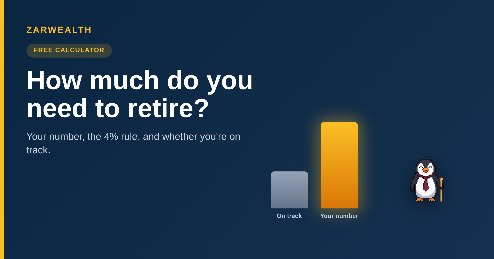

How Much Do You Need to Retire? (The Real Number for 2026)
Use our free calculator to find your retirement number with the 4% rule, see if you're on track, and what to save each month. Plus the honest 2026 update.
Z Zar · 10 Jun 2026 — 6 min read

How Much Do You Need to Retire?
Part of our Complete FIRE Guide — the financial-independence cluster.
Almost everyone has a vague answer to this question — "a million, maybe?" — and almost no one has actually worked it out. The strange part is that the math is simpler than people expect. Your retirement number isn't a mystery handed down by an advisor. It's mostly one input — how much you plan to spend each year — run through a single rule that has held up for thirty years.
Before we get to it, a quick gut check: what number is in your head right now for what you'll need to retire? Hold onto it. Most people are off by a factor of two in one direction or the other, and which direction tells you something useful about how you think about money.
This guide gives you the rule, the calculator to run your own number, and an honest look at where the rule starts to break — because the famous "4% rule" is quietly being revised for 2026, and that revision matters more for some people than others.
The one rule that sets your number
Here is the whole thing in a sentence: take the amount you expect to spend in your first year of retirement and multiply it by 25. That's your number. Spend $50,000 a year? You need about $1.25 million. Spend $80,000? About $2 million. The multiplier comes from the "4% rule" — the idea that you can withdraw 4% of a diversified portfolio in your first year, adjust for inflation after that, and have a high chance of the money lasting 30 years. Twenty-five times your spending is just the inverse of 4%.
That's it. Notice what's not in the formula: your salary, your age, your zip code. Those affect how you reach the number, but the number itself is driven almost entirely by your spending. Which leads to the single most powerful lever most people overlook — cutting your annual spending by $10,000 lowers your target by $250,000. Earning more helps; needing less helps far more.
Stay with us, because the next part is where the standard advice gets a quiet update that changes the answer for early retirees.
Run your own number
Enough theory — let's get your actual figure. Move the sliders below: your expected annual spending in retirement, your current age, when you want to retire, and what you've saved so far. The calculator shows your target number, what your current savings should grow to by then, and what you'd need to save each month to close the gap. The penguin will tell you how close you are.
Tell us what happened.
What was your number — bigger or smaller than the guess you were holding? And did the monthly savings figure feel doable or daunting? That gap is where most people's plans live or die.
Drop it in the comments below — public, takes ten seconds. Or hit reply to the email — private, tell us your situation.
Where the 4% rule starts to bend
The 4% rule was built in the 1990s on U.S. market history, and for a standard 30-year retirement it has held up remarkably well. But two things have shifted the conversation for 2026.
First, the recommended starting rate has drifted. Morningstar's late-2025 research put the safe starting withdrawal rate for a new retiree at about 3.9% — slightly below the classic 4%, mostly a function of valuations and bond yields. In practice that nudges the multiplier from 25x toward roughly 26x. Small for most people, but real.
Second, and more important: the 4% rule assumes a 30-year retirement. If you plan to retire at 50 and live to 90, that's 40 years, and the math gets stricter — many planners use 3.25% to 3.5% for early retirements, which pushes the multiplier toward 28-30x. So the honest answer to "how much do I need" is: 25x if you're retiring in your mid-60s, closer to 30x if you're retiring decades early. Our calculator uses 25x as the baseline; if you're aiming for an early exit, mentally pad the result by 15-20%.
If early retirement is the goal, our guides on what financial independence actually means and how to retire ten years early go deeper on the levers, and our breakdown of the best target date funds for 2026 covers the simplest way to actually invest toward the number.
The three things that move your number most
Once you have a target, three levers change it far more than picking the perfect fund ever will.
First, your spending. We said it above but it bears repeating because it's the one people resist: every $1,000 of annual spending you can cut in retirement lowers your target by $25,000. Paying off a mortgage before you retire, or moving somewhere cheaper, can knock years off your timeline.
Second, your timeline. Compounding does the heavy lifting, and it rewards the early years disproportionately. Starting at 30 instead of 40 can roughly double your ending balance for the same monthly contribution. If you're reading this in your twenties or thirties, that's the most valuable sentence here.
Third, other income. Social Security, a pension, or part-time work in early retirement all reduce the portfolio you need. If Social Security will cover $20,000 of your $50,000 annual spending, your portfolio only has to cover $30,000 — which drops your number from $1.25 million to $750,000. That's not a rounding error.
Many people stretch their retirement number by spending part of the year somewhere cheaper, which makes knowing how to open a bank account in another country a practical first step.
Once you have your number, the simplest way to invest toward it is often a target date fund — just be sure you are picking the right target date fund, not the wrong one.
So what should you actually do with this?
Here's the honest version. Run your number, then don't panic at it. A $1.25 million target sounds enormous when you're 35 with $80,000 saved — but the calculator's monthly figure is the part that matters, and it's usually more reachable than the headline number suggests, because decades of compounding do most of the work.
Our take: get the number roughly right, automate a monthly contribution toward it, invest it in something boring and diversified, and then stop checking. The people who hit their number aren't the ones who optimized every fund — they're the ones who picked a reasonable target, funded it consistently, and let time run. The calculator above is step one. The rest is repetition.
One book if you want to go deeper
Your Money or Your Life by Vicki Robin — the book that reframed "how much do I need" around the spending side of the equation, which is exactly the lever this calculator makes visible.
🛠️ Want more free tools like the one above? Browse our full set at zarwealth.tech/tools — all free, no signup.
 | Want the full picture? This is part of our Complete FIRE Guide. And we'd love to know: what was your number, and did it change how soon you think you can retire? Reply to the email or drop it in the comments — real reader numbers shape our next guide. |
Once you have your number, the next step is stress-testing it — we compared the AI retirement planning tools we tested in 2026 and four of them gave us four different answers.
Once you have your number, target date investing is the simplest way to automate the path to it — one fund that de-risks on schedule while you focus on the savings rate.
Get the free 11-page FI Checklist
A step-by-step roadmap to the number you just calculated. Sent the moment you subscribe.
Send me the checklist →